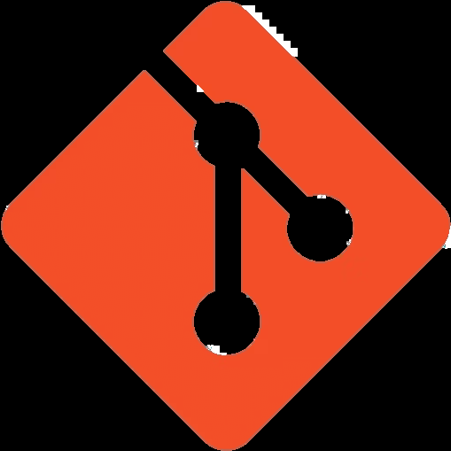
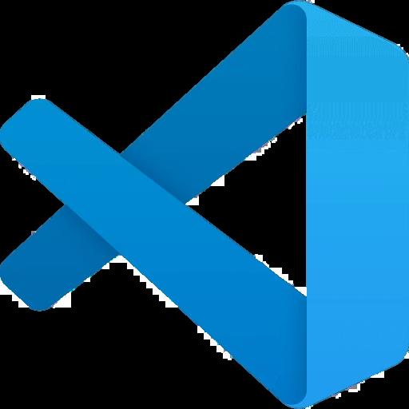
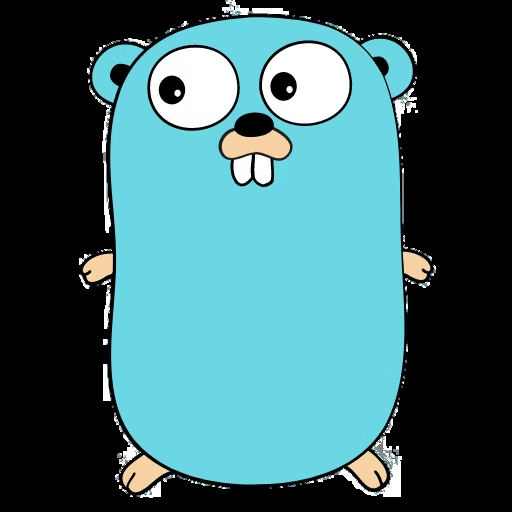
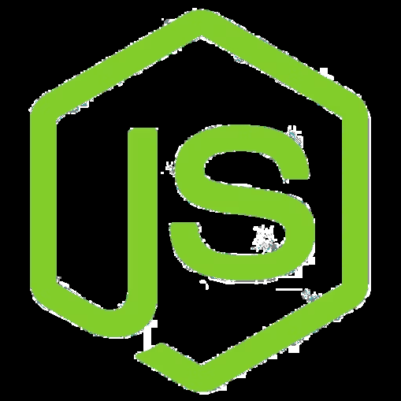
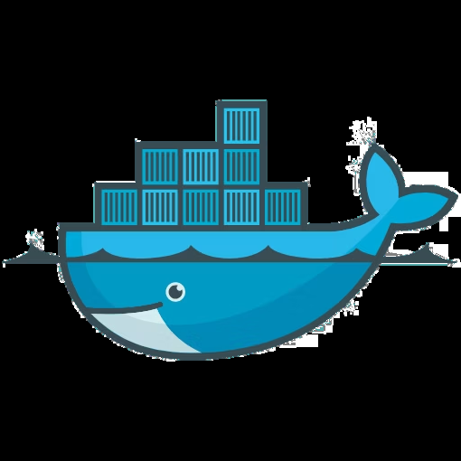
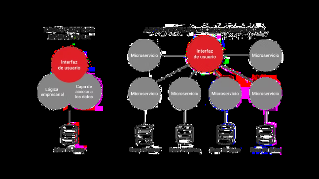
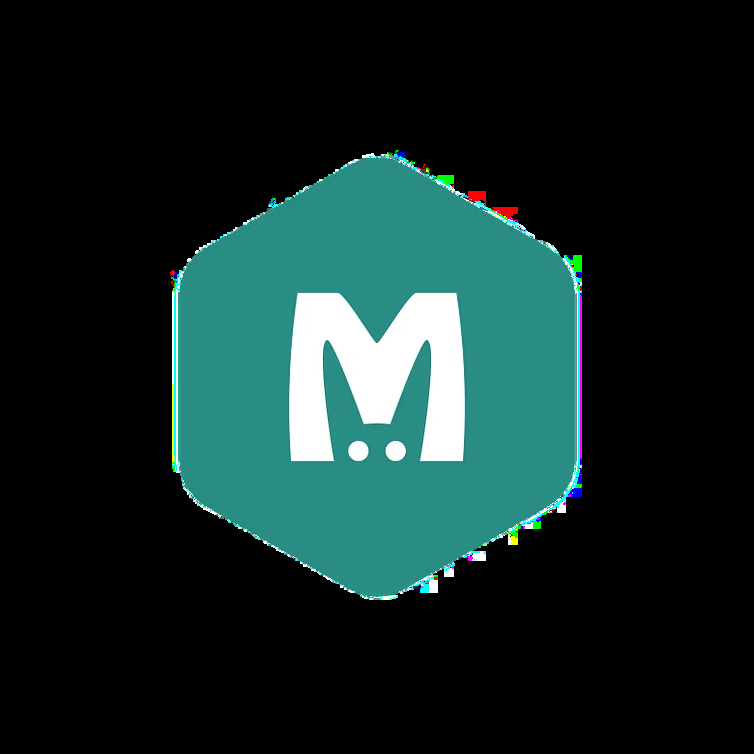
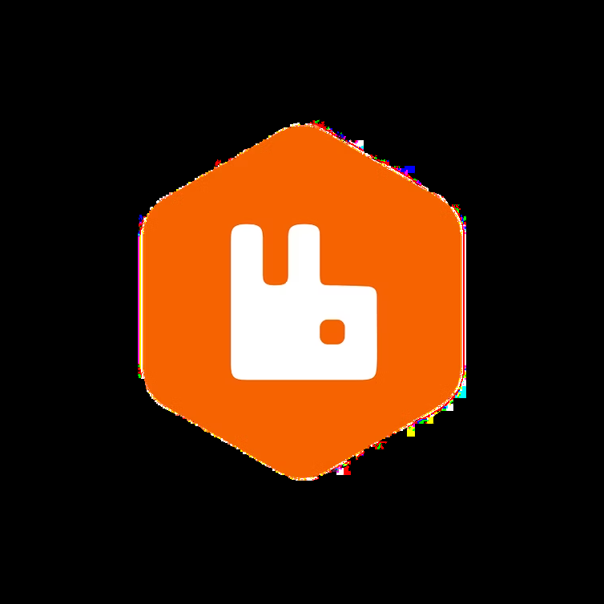

Git
Control de versiones para trabajo en equipo.
Arquitectura de Software
De monolitos a microservicios
Stack Tecnológico
El stack con el que vamos a trabajar durante la cursada.

Control de versiones para trabajo en equipo.

Editor base para el desarrollo diario.

Backend simple, rápido y eficiente.
Navegación y debugging desde DevTools.

Entorno para frontend, npm y tooling.
Testing y documentación de APIs.
Consultas y gestión visual de bases.

Entornos aislados y reproducibles.
Parte 1 · Teoría
La arquitectura define cómo se organiza un sistema.
Su calidad, mantenibilidad y escalabilidad dependen de esa estructura.
Parte 1 · Teoría

UI, negocio y datos empaquetados en un único despliegue.
Servicios independientes, poco acoplados y desplegables por separado.
Separar no alcanza: importa bajar acoplamiento y subir cohesión.
Parte 1 · Teoría
Cada servicio escala según su propia demanda.
Actualizar partes pequeñas suele ser más controlable.
Permite elegir tecnologías según el dominio.
El sistema procesa requests sin bloquear todo el ecosistema.
Stack Tecnológico
NoSQL orientada a documentos.

Caché para acelerar lecturas.
Búsqueda e indexación.

Mensajería asíncrona.
Parte 2 · Práctica
router.METODO("/entidades/:id", controlador.Accion)
Recursos uniformes en plural: users, activities, products.
Problema
El sistema que servía para un gimnasio chico ahora tiene sucursales, clases con cupos, tienda online, café, integraciones externas y club de beneficios.
Detectar al menos tres cuellos de botella técnicos del monolito actual.
Parte 2 · Práctica
Un error en un módulo puede romper partes no relacionadas del sistema.
No se puede escalar solo tienda o reservas sin mover todo el sistema.
Cada deploy impacta a toda la plataforma y sube el riesgo operativo.
Primera Decisión
Objetivo: bajo acoplamiento y alta cohesión.
Solución
GET /usersPOST /usersPUT /users/:idDELETE /users/:idGET /activitiesPOST /activitiesPUT /activities/:idDELETE /activities/:idGET /productsPOST /productsPUT /products/:idDELETE /products/:idGET /benefitsPOST /benefitsPUT /benefits/:idDELETE /benefits/:idParte 2 · Teoría
Actividades necesita validar con Usuarios si la cuota está al día antes de reservar una clase.
La solución
Definir la interface y la forma esperada de la respuesta.
Desarrollar contra una versión fake mientras el otro servicio no está.
Reemplazar luego el mock por la llamada HTTP sin cambiar el contrato.